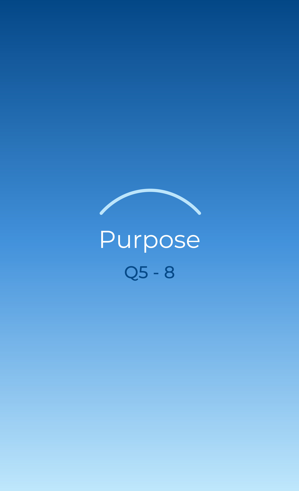

I think the primary goal of this website is clearly to market their new watch collection. However, it also aims to create a digital experience where users can relax, unwind, and reflect on the world in a colorful and meaningful way. Users can even leave the website open like a lo-fi music video.
This is a really interesting way of relieving stress. It’s not just about reading a book with meaningful quotes; instead, you feel like you are inside the world being created, reading motivational quotes that are connected to each scene. You move through peaceful moments of life—at the beach, in the city, or in the archipelago—across different points in time. Simply wandering through the website makes me feel like I’m actually part of that calm world, living a relaxed life without worries. I really like how the artist transforms simple everyday moments into immersive scenarios where the audience can feel grateful and more motivated in life.The interactive experience communicates the goal through:
- The action of reducing the browser size (on a PC or a laptop):
+ Using it on a mobile phone makes it easier to interact everywhere, every time
+ Create another experience for PC and laptop users so that they can see the animation when the browser is loaded, and reduce its size
- The scenes:
+ Beautiful art style
+ Illustrate real life, but in a positive and colorful way
+ Has some special elements that users can interact with
+ There are no detailed instructions; everything is in a general format (people, scene with no particular names) so it becomes everyone's own story
- The quotes:
+ Motivated quotes
+ Based on the scenes, it feels related when users explore the website
- The time wheel:
+ You can turn the wheel whenever you want
+ Create a 1-day-long experience
- The music:
+ Chill, lo-fi background music
+ Make the experience realistic